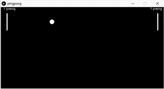

Kodeklubben, Processing og Ping-Pong (forslag til løsning)
Dette er min gjennomgang av oppgaven Ping pong for Processing laget av Kodeklubben. Min løsning er langt ifra den mest effektive koden. Tanken min er at man enkelt skal kunne lese seg frem til løsningen.
Jeg anbefaler at du går igjennom oppgavene Ping pong for Processing før du ser på mitt forslag til løsning. Kanskje du finner en bedre løsning enn meg? Står du fast kan du ta en titt på hvordan jeg har valgt å løse utfordringene.

Forklaring av koden
Del 1: Ballen
Vi setter opp noen variabler for ballen. For eksempel farten den skal ha i både X-aksen og Y-aksen og størrelsen.
// Ball float ballX; float ballY; float ballXFart = 2; float ballYFart = 2; float ballRadius = 9; float ballDiameter = ballRadius * 2;
ballX og ballY
Variablene ballX og ballY har ingen verdi. Vi bare forteller programmet at vi senere kommer til å bruke disse variablene og at de skal være av typen float.
ballXFart og ballYFart
Variabelen ballXFart bestemmer hastigheten i X-aksen. Dvs. hastigheten ballen har mot venstre eller høyre.
Variabelen ballYFart bestemmer hastigheten i Y-aksen. Dvs. hastigheten ballen har opp og ned.
ballRadius og ballDiameter
Variabelen ballRadius og ballDiameter bestemmer størrelsen på ballen. Disse variablene bruker vi blant annet til å sjekke om kanten av ballen treffer en rekkert eller kanten av banen.
Del 2: Rekkertene
Vi setter opp variabler for to rekkerter. En som skal plasseres på venstre side og en på høyre side. De har begge samme størrelse. Likevel setter vi opp størrelsen for rekkert 1 og rekkert 2. Årsaken er at vi kommer til å endre størrelsen på rekkertene i spillet.
// Rekkertene float rekkert1Hoyde = 66; // Rekkert 1 sin høyde ved start av spillet float rekkert2Hoyde = 66; // Rekkert 2 sin høyde ved start av spillet float rekkertBredde = 5; // Rekkertenes bredde float rekkertFart = 4; // Hastighet på rekkertene
rekkert1Hoyde og rekkert2Hoyde
Variablene rekkert1Hoyde og rekkert2Hoyde bestemmer høyden på de to rekkertene. Vi starter med lik høyde for begge to.
rekkertBredde
Variabelen rekkertBredde bestemmer bredden på rekkertene. Her skiller vi ikke mellom de to rekkertene. De får samme bredde og derfor setter vi opp kun en felles variabel.
rekkertFart
Variabelen rekkertFart bestemmer hvor raskt rekkertene kan bevege seg. Vi lar begge rekkertene bevege seg like raskt og derfor deler de samme variabel.
// Rekkert 1 sin plassering i X- og Y-aksen float rekkert1X = 20; float rekkert1Y = 100;
// Rekkert 2 sin plassering i X- og Y-aksen float rekkert2X = 575; float rekkert2Y = 100;
Plassering av rekkerter
Variablene rekkert1X og rekkert1Y plasserer rekkert 1 (for spiller 1) helt til venstre på banen. Men variablene rekkert2X og rekkert2Y plasserer rekkert 2 (for spiller 2) helt til høyre på banen.
Del 3: Poeng
Vi setter poengene til 0 for begge spillerne
// Poeng int spiller1 = 0; int spiller2 = 0;
spiller1 og spiller2
Variablene spiller1 og spiller2 er poengene de to spillerne har når spillet starter.
Del 4: Det olbigatoriske oppsettet
Vi setter størrelsen til 600x300 i henhold til oppgaven. Nå vi vet størrelsen så kan vi også sette ballens startposisjon.
void setup() {
size(600,300);
// Starposisjon for ball
ballX = width / 2;
ballY = height / 2;
}
Del 5: Utregning, regler og opptegning
VIKTIG! All kode etter dette punktet legges til innen for draw(). Så vi begynner med å lage den.
void draw() {
// All kode legger vi inn her
}
Del 6: Ballens hastighet og fart
Vi angir ballens posisjon + fart i både X-aksen og Y-aksen
// Posisjon for ball ballX = ballX + ballXFart; ballY = ballY + ballYFart;
Del 7: Hva skjer med ballen
Hva skjer med ballen når den kommer utenfor kanten på venstre eller høyre side. Vi sjekker ballens posisjon mot kanten av “bordtennisbordet”. Kommer den utenfor kanten så begynner den på nytt midt på bordet.
// Ny posisjon for ball hvis den kommer utenfor venstre side
if (ballX < ballRadius) {
ballX = width / 2;
ballY = height / 2;
}
// Ny posisjon for ball hvis den kommer utenfor høyre side
if (ballX > width - ballRadius) {
ballX = width / 2;
ballY = height / 2;
}
Hvis ballen treffet toppen eller bunnen så endrer vi retning ved sette på en minus (-) foran farten. Da snur ballen.
// Y-retning - sprett i toppen
if (ballY < ballRadius) {
ballYFart = -ballYFart;
}
// Y-retning - sprett i bunnen
if (ballY > height - ballRadius) {
ballYFart = -ballYFart;
}
Del 8: Når ballen treffer rekkerten
Siden vi har lagt opp til at vi skal ha noen rekkerter så legger vi til noen “regler” via if. Først legger vi til en regel for rekkerten til venstre (spiller 1).
// Hvis ball treffer rekkert på venstre side
if (ballX-ballRadius < rekkert1X + rekkertBredde && ballX + ballRadius > rekkert1X) {
if (ballY < rekkert1Y + rekkert1Hoyde && ballY > rekkert1Y) {
ballX = ballX + rekkertBredde; // Ny posisjon for ball i X-aksen
ballXFart = -ballXFart; // Ny retning for ball i X-aksen
rekkert1Hoyde = rekkert1Hoyde - 2; // Gjør rekkert litt mindre
spiller1 = spiller1 + 1; // Legg på poeng for spiller 1
}
}
Så legger vi til en “regel” for hva som skal hende med ballen når den treffer den andre rekkerten (for spiller 2).
// Hvis ball treffer rekkert på høyre side
if (ballX-ballRadius < rekkert2X + rekkertBredde && ballX + ballRadius > rekkert2X) {
if (ballY < rekkert2Y + rekkert2Hoyde && ballY > rekkert2Y) {
ballX = ballX - rekkertBredde; // Ny posisjon for ball i Y-aksen
ballXFart = -ballXFart; // Ny retning for ball i Y-aksen
rekkert2Hoyde = rekkert2Hoyde - 2; // Gjør rekkert litt mindre
spiller2 = spiller2 + 1; // Legg på poeng for spiller 2
}
}
Hvis vi ser på de to “reglene” for begge rekkertene så er de nesten like. Når ballen treffer rekkerten så endres retningen for ballen. I tillegg gjør vi noe lurt for å gjøre spillet litt vanskeligere. Høyden på rekkerten blir litt lavere for hver gang man “slår” ballen. Så får man et poeng.
Spilltaster
For å kunne spille så må man kunne kontrollere rekkertene. Dette gjøres ved å sjekke om det er en tast på tastaturet som blir trykket ned. Så sjekker vi hvilken tast det er og om det stemmer overens med de vi ønsker å bruke for å kontrollere en av rekkertene.
if (keyPressed) {
// Kontroll av rekkert 2 (høyre side)
if (keyCode == UP) {
rekkert2Y = rekkert2Y - rekkertFart;
}
if (keyCode == DOWN) {
rekkert2Y = rekkert2Y + rekkertFart;
}
// Kontroll av rekkert 1 (venstre side)
if (key == 'w') {
rekkert1Y = rekkert1Y - rekkertFart;
}
if (key == 's') {
rekkert1Y = rekkert1Y + rekkertFart;
}
}
Som du ser i koden så bruker vi piltast opp og ned. De kontrollerer rekkerten til høyre (spiller 1). Mens w og s er for rekkerten til venstre (spiller 1).
Del 9: Tegn opp figurer
Nå skal vi oppdatere skjermen med alle de tall og variabler vi har angitt eller endret på.
background(0); ellipse(ballX, ballY, ballDiameter, ballDiameter); // Tegn ball rect(rekkert1X, rekkert1Y, rekkertBredde, rekkert1Hoyde); // Tegn rekkert 1 rect(rekkert2X, rekkert2Y, rekkertBredde, rekkert2Hoyde); // Tegn rekkert 2 text(spiller1+" poeng",10,10); // Poenh for spiller 1 text(spiller2+" poeng",550,10); // Poeng for spiller 2
Del 10: Komplett kode
Slik ser den ferdige koden ut.
// Ball
float ballX;
float ballY;
float ballXFart = 2;
float ballYFart = 2;
float ballRadius = 9;
float ballDiameter = ballRadius * 2;
// Rekkertene
float rekkert1Hoyde = 66; // Rekkert 1 sin høyde ved start av spillet
float rekkert2Hoyde = 66; // Rekkert 2 sin høyde ved start av spillet
float rekkertBredde = 5; // Rekkertenes bredde
float rekkertFart = 4; // Hastighet på rekkertene
// Rekkert 1 sin plassering i X- og Y-aksen
float rekkert1X = 20;
float rekkert1Y = 100;
// Rekkert 2 sin plassering i X- og Y-aksen
float rekkert2X = 575;
float rekkert2Y = 100;
// Poeng
int spiller1 = 0;
int spiller2 = 0;
void setup() {
size(600,300);
smooth(2);
// Starposisjon for ball
ballX = width / 2;
ballY = height / 2;
}
void draw() {
// Posisjon for ball
ballX = ballX + ballXFart;
ballY = ballY + ballYFart;
// Ny posisjon for ball hvis den kommer utenfor venstre side
if (ballX < ballRadius) {
ballX = width / 2;
ballY = height / 2;
}
// Ny posisjon for ball hvis den kommer utenfor høyre side
if (ballX > width - ballRadius) {
ballX = width / 2;
ballY = height / 2;
}
// Y-retning - sprett i toppen
if (ballY < ballRadius) {
ballYFart = -ballYFart;
}
// Y-retning - sprett i bunnen
if (ballY > height - ballRadius) {
ballYFart = -ballYFart;
}
// Hvis ball treffer rekkert på venstre side
if (ballX-ballRadius < rekkert1X + rekkertBredde && ballX + ballRadius > rekkert1X) {
if (ballY < rekkert1Y + rekkert1Hoyde && ballY > rekkert1Y) {
ballX = ballX + rekkertBredde; // Ny posisjon for ball i X-aksen
ballXFart = -ballXFart; // Ny retning for ball i X-aksen
rekkert1Hoyde = rekkert1Hoyde - 2; // Gjør rekkert litt mindre
spiller1 = spiller1 + 1; // Legg på poeng for spiller 1
}
}
// Hvis ball treffer rekkert på høyre side
if (ballX-ballRadius < rekkert2X + rekkertBredde && ballX + ballRadius > rekkert2X) {
if (ballY < rekkert2Y + rekkert2Hoyde && ballY > rekkert2Y) {
ballX = ballX - rekkertBredde; // Ny posisjon for ball i Y-aksen
ballXFart = -ballXFart; // Ny retning for ball i Y-aksen
rekkert2Hoyde = rekkert2Hoyde - 2; // Gjør rekkert litt mindre
spiller2 = spiller2 + 1; // Legg på poeng for spiller 2
}
}
if (keyPressed) {
// Kontroll av rekkert 2 (høyre side)
if (keyCode == UP) {
rekkert2Y = rekkert2Y - rekkertFart;
}
if (keyCode == DOWN) {
rekkert2Y = rekkert2Y + rekkertFart;
}
// Kontroll av rekkert 1 (venstre side)
if (key == 'w') {
rekkert1Y = rekkert1Y - rekkertFart;
}
if (key == 's') {
rekkert1Y = rekkert1Y + rekkertFart;
}
}
background(0);
ellipse(ballX, ballY, ballDiameter, ballDiameter); // Tegn ball
rect(rekkert1X, rekkert1Y, rekkertBredde, rekkert1Hoyde); // Tegn rekkert 1
rect(rekkert2X, rekkert2Y, rekkertBredde, rekkert2Hoyde); // Tegn rekkert 2
text(spiller1+" poeng",10,10); // Poenh for spiller 1
text(spiller2+" poeng",550,10); // Poeng for spiller 2
}
Klarer du å lage en autoplay som spiller spillet for deg? Klarer du å legge på egne farger på de enkelte delene? Klarer du å få flere poeng en din motstander?
Lykke til!